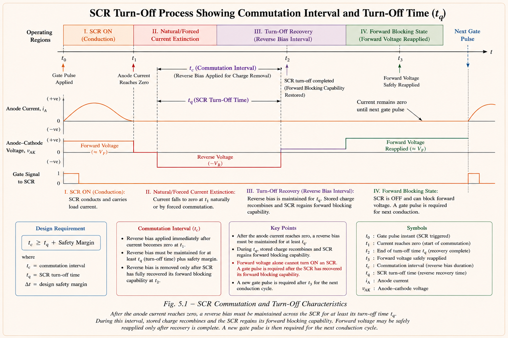
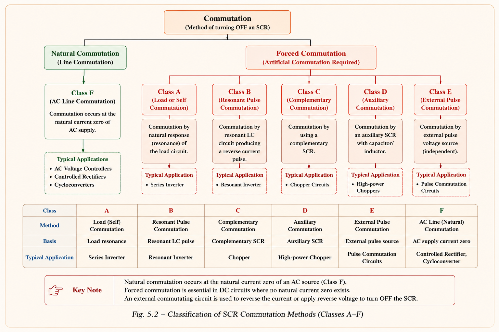
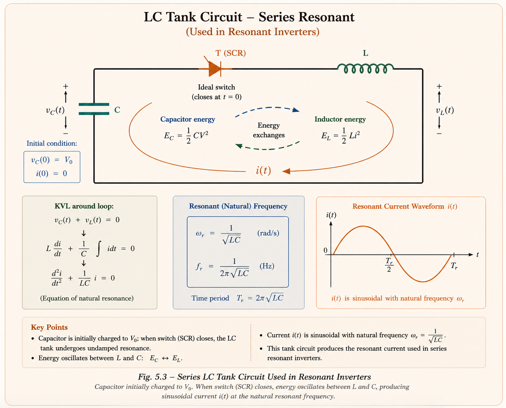
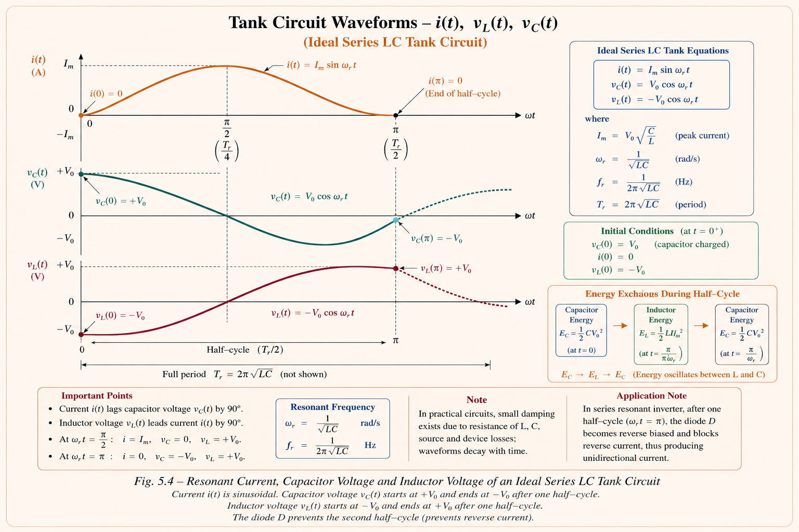
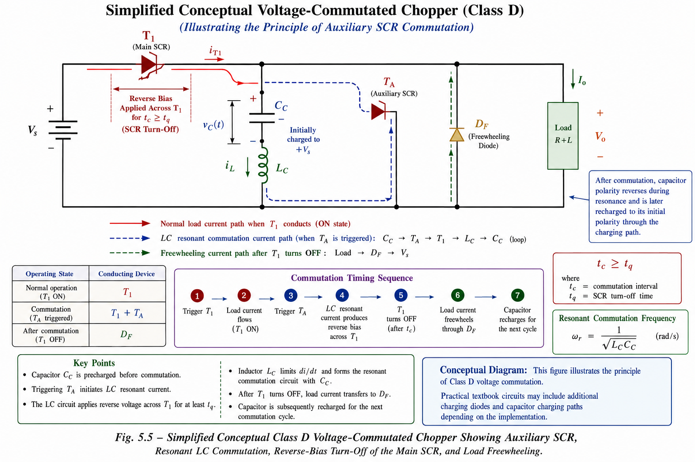
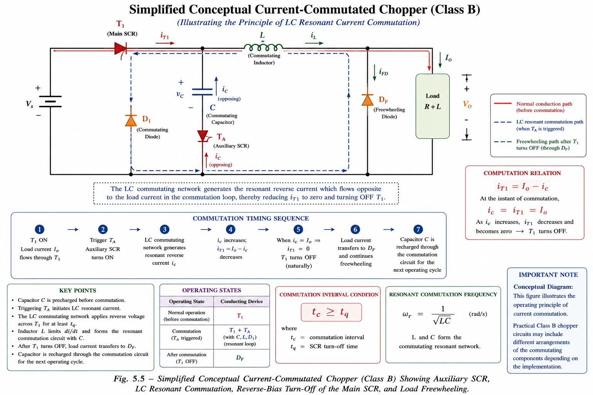

Thyristor turn-off mechanisms, natural and forced commutation, tank circuit analysis, voltage and current commutated choppers — comprehensive GATE, IES, and PSU coverage with full derivations, inline circuit diagrams, and exam-oriented insights.
A thyristor (SCR) is a semi-controlled switch. Unlike a transistor, you cannot turn it OFF simply by removing the gate signal. Once a thyristor latches ON, current continues to flow as long as the anode-to-cathode current remains above the holding current. The engineering challenge in power electronic circuits is: how do we turn the thyristor OFF?
The process of deliberately transferring current away from a conducting thyristor so that it reverts to its blocking state is called commutation. Every thyristor converter, inverter, or chopper must include a commutation strategy — it is not optional. Without commutation, the SCR cannot be turned off, and the power circuit becomes uncontrollable.
The SCR needs a reverse voltage applied for a duration equal to or greater than the turn-off time \(t_q\) (typically 10–200 µs) before it can block forward voltage again. If the reverse voltage interval is shorter than \(t_q\), the SCR re-latches — causing a commutation failure and losing control of the circuit entirely.

When an SCR conducts, charge carriers (holes and electrons) flood all four layers of the p-n-p-n structure. When the anode current falls to zero, these minority carriers do not disappear instantly — they take time to recombine. During this recovery period, if forward voltage is re-applied, the carriers act like pre-injected gate current and the SCR latches ON again without a gate pulse — a phenomenon called premature re-triggering or commutation failure.
Think of the SCR's recovery like a crowd trying to leave a stadium. Even after the game (conduction) ends, people (carriers) are still in the aisles. You cannot let the next event start (forward voltage) until the stadium is empty (carriers recombined). The time to clear the stadium is the turn-off time \(t_q\).
| Parameter | Symbol | Typical Value | Physical Meaning |
|---|---|---|---|
| Turn-off time | \(t_q\) | 10–200 µs | Minimum reverse-voltage duration needed for complete carrier recombination |
| Circuit turn-off time | \(t_c\) | \(> t_q\) | Actual reverse-voltage interval provided by the commutation circuit |
| Holding current | \(I_H\) | 5–100 mA | Minimum anode current to keep SCR latched |
| Latching current | \(I_L\) | 2–4× \(I_H\) | Minimum current needed for SCR to stay ON after gate pulse removed |
| Safety margin | \(\Delta t\) | ~5 µs | Additional reverse-voltage time above \(t_q\) for reliability |
All commutation methods fall into two fundamental categories based on whether the reverse voltage arises naturally from the supply or must be artificially created using auxiliary components.
In modern power electronics, forced commutation using SCRs has been largely replaced by self-commutating devices (MOSFET, IGBT, GTO) that can be turned off by their gate terminal. However, commutation circuit theory remains a core GATE and IES topic covering Class A–F commutation, tank circuits, and chopper designs.

The tank circuit (also called the resonant commutation circuit) is a series combination of an inductor \(L\) and capacitor \(C\) that produces a sinusoidal oscillating current when triggered. This oscillating current is exploited to reverse-bias and turn off the main thyristor.
Understanding the tank circuit mathematically is crucial — virtually every forced commutation scheme relies on its behaviour. Let us derive the key results from first principles using Laplace transforms, following the approach in Mohan's Power Electronics.

Assume the capacitor is initially charged to voltage \(V_0\). When the circuit is closed, by KVL:
Taking the Laplace transform, with initial capacitor voltage \(V_0\) (polarity such that current leaves the positive terminal):
Simplifying and solving for \(I(s)\):
Taking the inverse Laplace transform:
The voltage across the inductor and capacitor during conduction:
At the end of the half-cycle (\(\omega_0 t = \pi\), i.e., at \(t = \pi\sqrt{LC}\)), the capacitor voltage reverses polarity completely from \(+V_0\) to \(-V_0\). This reversed voltage is what drives the commutation process — it provides the reverse bias across the conducting SCR.
\(I_m = V_0\sqrt{\dfrac{C}{L}}\) — depends on initial voltage and L/C ratio
Sinusoidal at frequency \(\omega_0 = \dfrac{1}{\sqrt{LC}}\) rad/s — like a harmonic oscillator
\(t_{cond} = \pi\sqrt{LC}\) seconds — exactly one half-cycle of the resonant frequency
Polarity reverses at end of conduction: from \(+V_0\) to \(-V_0\) — total change = \(2V_0\)

A diode is placed in series with the LC tank. After one half-cycle, the current \(i(t)\) tries to reverse — the diode blocks this reverse current, so the circuit conducts for exactly \(\pi\sqrt{LC}\) seconds. Without the diode, the circuit would oscillate indefinitely and the capacitor voltage would swing back to \(+V_0\), providing no net commutation benefit.
A voltage commutated chopper (also called impulse commutated chopper) uses a pre-charged capacitor to apply a sudden reverse voltage across the main SCR, turning it off. The reverse voltage is applied as a high-amplitude impulse — hence the alternative name. This is the most widely studied forced commutation scheme in GATE and IES.
Imagine the main SCR (\(T_1\)) is conducting and supplying load current \(I_0\). To turn it off, we switch in an auxiliary SCR (\(T_A\)) that connects a pre-charged capacitor \(C\) across \(T_1\). The capacitor's voltage (opposite to forward drop of \(T_1\)) instantly reverse-biases \(T_1\), forcing its current to zero. The capacitor voltage is the commutating voltage — hence "voltage commutated."

| Mode | Devices Active | What Happens | Key Equation |
|---|---|---|---|
| Mode I (t = 0) | T₁ ON, D OFF | T₁ fires; load connected to supply. C charged to V_s (+ left, − right). Load current \(I_0\) flows. | \(V_0 = V_s\) |
| Mode II (t₁) | T_A fires | T_A turns on; tank circuit formed by V_s, C, T_A, L. Oscillating current \(i_c\) builds up sinusoidally. T₁ carries \(I_0 + i_c\) momentarily. | \(i_c = V_s\sqrt{C/L}\sin\omega_0 t\) |
| Mode III (t₂) | T_A off, D on | \(V_C\) reverses to \(-V_s\). T_A naturally commutates. Oscillatory current flows through C, L, D₂, T₁. Current through T₁ decreases as \(i_c\) rises toward \(I_0\). | \(V_C = -V_s\) |
| Mode IV (t₃) | T₁ off, FD on | When \(i_c = I_0\), current through T₁ drops to zero — T₁ turns off. Freewheeling diode FD carries load current. C charges linearly from \(-V_s\) back toward \(+V_s\). | \(t_c = t_3 - t_2\) ← circuit turn-off time |
In current commutated chopper, commutation is achieved by injecting an oscillatory current pulse through the main SCR in the opposite direction to the load current. When the net current through the SCR becomes zero, it turns off naturally. This is fundamentally different from voltage commutation — here it is the current that is forced to zero, not a voltage reversal that does it.
Voltage commutation: apply reverse voltage → SCR current becomes zero. Current commutation: inject opposing current pulse directly → total SCR current = I_load − I_pulse = 0. Both achieve the same goal but through different physical mechanisms. Morgan's chopper uses the principle of current commutation.

The commutating inductor \(L\) in a current commutated chopper must be carefully designed. The condition is that the peak commutating current must exceed the load current:
The value of \(L\) is determined based on the circuit turn-off time requirement:
where \(x = I_{cp}/I_0\) is the ratio of peak commutating current to load current, and \(t_c\) is the required circuit turn-off time (\(t_c > t_q\)).
Students often wonder why an anti-parallel diode is placed across the main SCR in current commutation. The reason: when the SCR turns off, the commutating current \(i_c\) still exceeds \(I_0\) momentarily, and this excess current must flow somewhere. The anti-parallel diode provides this path, preventing dangerously high reverse voltage from appearing across T₁. Without this diode, the L-C circuit energy would create large voltage spikes.
The design of commutating inductor \(L\) and capacitor \(C\) is a standard GATE numerical topic. The values must satisfy two conditions simultaneously: (1) provide sufficient peak current/voltage for commutation, and (2) provide a circuit turn-off time that exceeds the SCR's rated turn-off time \(t_q\).
During the commutation interval \(t_3 - t_2\), the capacitor voltage changes linearly from \(-V_s\) to \(+V_s\), a total change of \(2V_s\), while carrying the constant load current \(I_0\). Using \(i = C\,dV/dt\):
The commutating inductor \(L\) is then determined from the resonant condition (peak current through main SCR must not cause commutation failure):
For a simple \(RC\) commutation circuit (not LC tank), the circuit turn-off time is: \(t_c = RC\ln 2\). This is the time for the capacitor to charge from \(-V_s\) to zero through resistance \(R\). For example, if \(R = R_1 = R_2 = 5\,\Omega\) and \(C = 7.5\,\mu F\), then \(t_c = 5 \times 7.5\times10^{-6} \times 0.693 \approx 26\,\mu s\).
| Feature | Natural Commutation | Voltage Commutated | Current Commutated |
|---|---|---|---|
| How SCR turns off | Supply voltage reverses naturally | Capacitor applies reverse voltage pulse | Opposing current cancels SCR current |
| Application | AC-DC rectifiers, AC controllers | DC choppers (Jones type) | DC choppers (Morgan type) |
| Auxiliary components | None | 1 auxiliary SCR + L + C | 1 auxiliary SCR + L + C + extra diodes |
| No-load operation | Yes | No — cannot recharge C | Yes — cap charges from supply |
| Voltage stress on load | Normal | 2V_s momentarily | Normal (V_s) |
| Main SCR rating | Normal | I₀ + V_s√(C/L) — over-rated | I₀ only |
| Circuit complexity | Simple | Moderate | More complex |
| Named topologies | — | Jones Chopper | Morgan's Chopper |
Jones Chopper employs the principle of voltage commutation. Morgan's Chopper employs the principle of current commutation. These associations are directly tested in GATE and IES. Remember: Jones = Voltage, Morgan = Current.
Question Type: A resonant commutation circuit has supply voltage \(V_{dc} = 200\,\text{V}\), maximum load current \(I_0 = 10\,\text{A}\), device turn-off time \(t_q = 30\,\mu s\), and ratio of peak resonant current to load current = 1.5. Find the values of L and C.
Question Type: A voltage commutated chopper operates at 500 Hz. Supply = 200 V, maximum load current = 10 A, L = 1 mH, C = 0.1 µF. Find the maximum current through main (M) and auxiliary (A) thyristors.
Question Type: In a commutation circuit, \(R_1 = R_2 = R = 5\,\Omega\) and \(C = 7.5\,\mu F\), \(V_{dc} = 100\,V\). Determine the circuit turn-off time.
Question Type: In a resonant pulse commutation, \(V_s = 230\,V\), \(L = 5\,\mu H\), \(C = 20\,\mu F\), \(I_0 = 300\,A\). Find the voltage across the main SCR when it gets turned off.
Type a question about commutation, or tap a suggested topic below:
Reverse voltage must persist for \(\geq t_q\) seconds. Circuit turn-off time \(t_c = t_q + \Delta t\). Failure → commutation failure → loss of control.
\(i(t) = V_0\sqrt{C/L}\sin\omega_0 t\). Peak = \(V_0\sqrt{C/L}\). Conduction = \(\pi\sqrt{LC}\). \(V_C\) reverses: \(+V_0 \to -V_0\).
\(\omega_0 = 1/\sqrt{LC}\) rad/s. \(f_0 = 1/(2\pi\sqrt{LC})\) Hz. Min ON time = \(\pi\sqrt{LC}\).
C applies reverse V to SCR. No-load fails. Load V reaches 2V_s. SCR must carry \(I_0 + V_s\sqrt{C/L}\). Jones Chopper = voltage type.
Opposing i_c cancels I_0 in SCR. Works at no-load. Morgan's Chopper = current type. Need \(I_{cp} \geq I_0\).
\(C = I_0 t_c/(2V_s)\). \(L \geq (V_s/I_0)^2 C\). RC circuit: \(t_c = RC\ln 2\). Effective duty cycle \(\alpha' = T'_{ON}/T\).
All technical content is derived from the following standard textbooks. All explanations, derivations, and diagrams are original to Aarova AI.